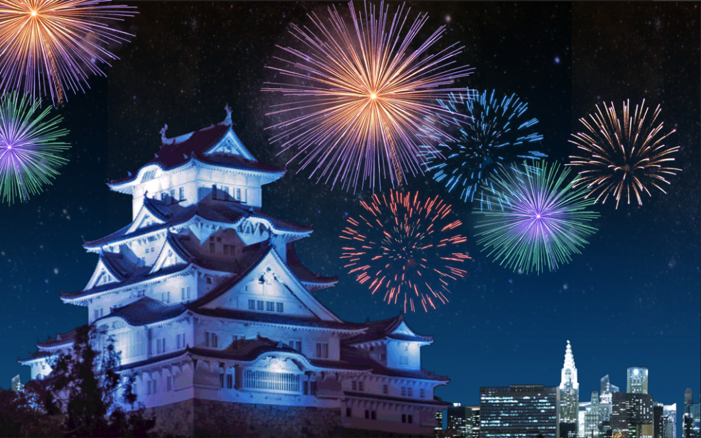
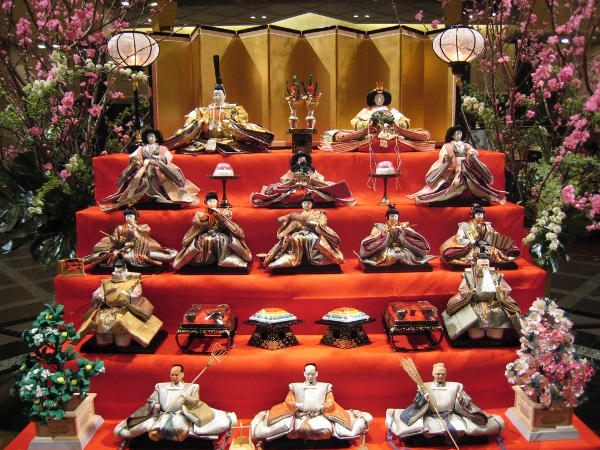
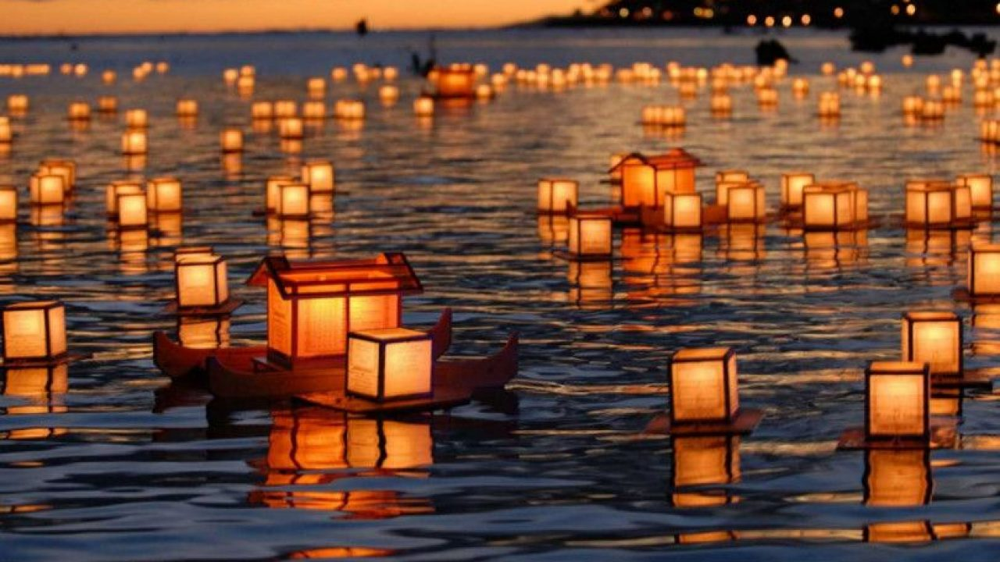

(✿◠‿◠)Festivaluri japoneze
❀ Sărbătoarea Anului Nou
Japonezii sărbătoresc sfârșitul unui an și începutul următorului cu mare fast și pasiune. Perioada sărbătorită se numește shogatsu, care într-un sens foarte larg se referă la prima lună a anului. Pe întâi ianuarie familiile japoneze se reunesc pentru a bea un anume tip de sake, care se presupune că asigură o viață lungă, pentru a mânca un anume tip de supă cu orez care, după obicei, șterge orice amintire rea care a rămas din anul precedent.

❀ Festivalul păpușilor
Festivalul păpușilor sau hina matsuri, este celebrat în data de 3 martie, când familiile japoneze cu fete expun în interiorul casei un set de păpuși reprezentând vechea familie imperială.
❀ Festivalul Tanabata
Sărbătorit pe 7 iulie, sau pe 7 august în unele zone ale Japoniei, Festivalul Tanabata își are originile într-o legendă populară chineză care povestea despre întâlnirea romantică, o dată pe an, a două stele din Calea Lactee: Steaua Văcarului (Altair) și Steaua Țesătoarei (Vega). În ziua festivalului oamenii își scriu dorințele pe fâșii de hârtie colorată, pe care mai apoi le prind de ramurile arborilor de bambus. Sărbătoarea este asociată cu ziua îndrăgostiților.

❀ Festivalul Bon
În mod tradițional, Festivalul Bon se întinde pe mai multe zile, în jurul datei de 15 august (sau 15 iulie), când sufletele celor morți se reîntorc, conform tradiției, la casele lor. În această perioadă a anului mulți japonezi fac excursii în locurile natale pentru a vizita mormintele strămoșilor lor. În timpul acestui festival, oamenii aprind lanterne, făcute din lemn și hârtie, care au scopul de a călăuzi sufletele morților spre și dinspre casele lor; se aduce mâncare ca ofrandă celor decedați și se dansează bon odori (dansuri speciale). Lanternele sunt de obicei trimise pe apă, în josul râurilor.